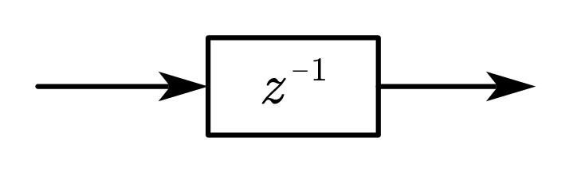
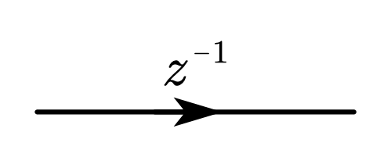
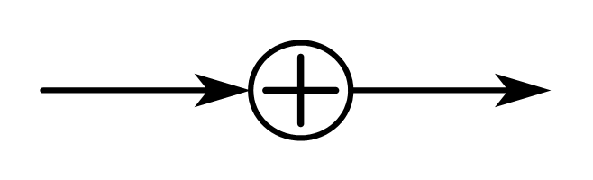
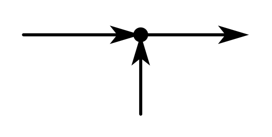

Josh's Review: 数字信号处理（Part 6 — 数字滤波器的基本结构）
1. 基本运算单元的结构图表示
| 基本运算单元 | 方框图 | 流图 |
|---|---|---|
| 单位延时 |  |  |
| 常数乘法器 | ||
| 加法器 |  |  |
2. IIR（Infinite Impulse Response）数字滤波器的基本结构
IIR 数字滤波器的结构特点
\[\begin{align} &系统函数：H\left(z\right)=\frac{Y\left(z\right)}{X\left(z\right)}=\frac{\displaystyle\sum_{k=0}^{M}{b_kz^{-k}}}{1-\displaystyle\sum_{k=1}^{N}{a_kz^{-k}}}\\ &差分方程：y\left(n\right)=\sum_{k=1}^{N}{a_ky\left(n-k\right)}+\sum_{k=0}^{M}{b_kx\left(n-k\right)} \end{align}\]
系统的单位脉冲响应 \(h\left(n\right)\) 无限长；
系统函数 \(H\left(z\right)\) 在有限 \(z\) 平面（\(0<\left|z\right|<\infty\)）上有极点存在；
存在输出到输入的反馈，递归型结构：直接Ⅰ、Ⅱ型，级、并联型。
2.1. 直接Ⅰ型
将系统函数写为
\[\begin{equation} H\left( z \right) =\frac{Y\left( z \right)}{X\left( z \right)}=\frac{\displaystyle\sum_{k=0}^M{b_kz^{-k}}}{1-\displaystyle\sum_{k=1}^N{a_kz^{-k}}}=\underset{H_1\left( z \right)}{\underbrace{\sum_{k=0}^M{b_kz^{-k}}}}\times \underset{H_2\left( z \right)}{\underbrace{\left( 1-\displaystyle\sum_{k=1}^N{a_kz^{-k}} \right) ^{-1}}} \end{equation}\]
则系统框图可表示为
由此可得系统的两级输入输出的微分方程
\[\begin{equation} H_1\left(z\right)=\sum_{k=0}^{M}{b_kz^{-k}}=\frac{U\left(z\right)}{X\left(z\right)}\Longrightarrow u\left(n\right)=\sum_{k=0}^{M}{b_kx\left(n-k\right)} \end{equation}\]
\[\begin{equation} H_2\left(z\right)=\left(1-\sum_{k=1}^{N}{a_kz^{-k}}\right)^{-1}=\frac{Y\left(z\right)}{U\left(z\right)}\Longrightarrow y\left(n\right)=u\left(n\right)+\sum_{k=1}^{M}{a_ky\left(n-k\right)} \end{equation}\]
由微分方程可得直接Ⅰ型 IIR 滤波器的流图
2.2. 直接Ⅱ型（典范型）
系统函数仍为
\[\begin{equation} H\left( z \right) =\frac{Y\left( z \right)}{X\left( z \right)}=\frac{\displaystyle\sum_{k=0}^M{b_kz^{-k}}}{1-\displaystyle\sum_{k=1}^N{a_kz^{-k}}}=\underset{H_1\left( z \right)}{\underbrace{\sum_{k=0}^M{b_kz^{-k}}}}\times \underset{H_2\left( z \right)}{\underbrace{\left( 1-\displaystyle\sum_{k=1}^N{a_kz^{-k}} \right) ^{-1}}} \end{equation}\]
将系统框图变为
由此可得系统的两级输入输出的微分方程
\[\begin{equation} H_2\left(z\right)=\left(1-\sum_{k=1}^{N}{a_kz^{-k}}\right)^{-1}=\frac{W\left(z\right)}{X\left(z\right)}\Longrightarrow w\left(n\right)=x\left(n\right)+\sum_{k=1}^{M}{a_kx\left(n-k\right)} \end{equation}\]
\[\begin{equation} H_1\left(z\right)=\sum_{k=0}^{M}{b_kz^{-k}}=\frac{Y\left(z\right)}{W\left(z\right)}\Longrightarrow y\left(n\right)=\sum_{k=0}^{M}{b_kw\left(n-k\right)} \end{equation}\]
由微分方程可得直接Ⅱ型 IIR 滤波器的流图
直接型 IIR 滤波器的结构特点
直接Ⅰ型
直接Ⅱ型
不同点
两个网络级联：第一个横向结构 M 节延时网络实现零点，第二个有反馈的 N 节延时网络实现极点。
两个网络级联：第一个有反馈的 N 节延时网络实现极点，第二个横向结构 M 节延时网络实现零点。
延时单元数：N + M
乘法器数：N + M + 1
加法器数：1延时单元数：max{N , M}
乘法器数：N + M + 1
加法器数：2相同点
系数 ak , bk 不能直接决定单个零极点，因而不能很好地进行滤波器性能控制。
极点对系数（零极点的位置）变化过于灵敏，从而使系统频率响应对系数变化过于灵敏，也就是对有限精度（有限字长）运算过于灵敏，容易出现不稳定或产生较大误差。
计算的累积误差较大
2.3. 级联型
将系统函数按零极点因式分解，可表示为
\[\begin{equation} H\left(z\right)=\frac{\displaystyle\sum_{k=0}^{M}{b_kz^{-k}}}{1-\displaystyle\sum_{k=1}^{N}{a_kz^{-k}}}=A\frac{\displaystyle\prod_{k=1}^{M_1}\left(1-p_kz^{-1}\right)\displaystyle\prod_{k=1}^{M_2}\left(1-q_kz^{-1}\right)\left(1-q_k^\ast z^{-1}\right)}{\displaystyle\prod_{k=1}^{N_1}\left(1-c_kz^{-1}\right)\displaystyle\prod_{k=1}^{N_2}\left(1-d_kz^{-1}\right)\left(1-d_k^\ast z^{-1}\right)} \end{equation}\]
其中 \(A\) 为常数，\(M=M_1+2M_2\)，\(N=N_1+2N_2\)，\(p_k,c_k\)分别为实数零、极点，\(q_k,q_k^\ast\) 和 \(d_k,d_k^\ast\) 分别为复共轭零、极点。将共轭成对的复数零、极点合并为为实系数二阶多项式，得
\[\begin{equation} H\left(z\right)=A\prod_{k=1}^{L}\left[\frac{1+\beta_{1k}z^{-1}+\beta_{2k}z^{-2}}{1-\alpha_{1k}z^{-1}-\alpha_{2k}z^{-2}}\right]=A\prod_{k=1}^{L}{H_k\left(z\right)},\ \ L=\left\lfloor\frac{N+1}{2}\right\rfloor \end{equation}\]
则系统框图可表示为
进一步可得级联型 IIR 滤波器的流图
级联型 IIR 滤波器的结构特点
分别调整系数 \(\beta_{1k},\beta_{2k}\)、\(\alpha_{1k},\alpha_{2k}\)，能单独调整滤波器的第k对零、极点，而不影响其它零、极点，由此，可以方便的调整滤波器的频响性能。
运算的累积误差较小、所需存储单元少，可实现时分复用、组合方式多等。
2.4. 并联型
将系统函数展开成部分分式的形式，可表示为
\[\begin{equation} H\left(z\right)=\sum_{k=0}^{M-N}{G_kz^{-k}}+\sum_{k=1}^{N_1}\frac{A_k}{1-g_kz^{-1}}+\sum_{k=1}^{N_2}\frac{\beta_{0k}+\beta_{1k}z^{-1}}{1-\alpha_{1k}z^{-1}-\alpha_{2k}z^{-2}} \end{equation}\]
其中 \(G_k,A_k,g_k,\beta_{0k},\beta_{1k},\alpha_{1k},\alpha_{2k}\) 均为实数。且当 \(M<N\) 时，上式不包含 \(\displaystyle\sum_{k=0}^{M-N}{G_kz^{-k}}\) 项；当 \(M=N\) 时，上式变为
\[\begin{equation} H\left(z\right)=G_0+\sum_{k=1}^{N_1}\frac{A_k}{1-g_kz^{-1}}+\sum_{k=1}^{N_2}\frac{\beta_{0k}+\beta_{1k}z^{-1}}{1-\alpha_{1k}z^{-1}-\alpha_{2k}z^{-2}}\ (M=N) \end{equation}\]
可得 \(M=N\) 时并联型 IIR 滤波器的系统框图和流图
并联型IIR滤波器的结构特点
通过调整系数 \(\alpha_{1k},\alpha_{2k}\)，可单独调整一对极点位置，但不能单独调整零点位置。
各并联基本节的误差互相不影响，故运算累积误差小。
可进行并行运算，运算速度高。
2.5. 转置定理
对于单输入单输出系统，将原网络中所有支路方向倒转，并将输入 \(x\left(n\right)\) 和输出 \(y\left(n\right)\) 相互交换，则倒转后的结构与原结构的系统函数 \(H(z)\) 向相同。
3. FIR（Finite Impulse Response）数字滤波器的基本结构
FIR 数字滤波器的结构特点
\[\begin{align} &系统函数：H\left(z\right)=\frac{Y\left(z\right)}{X\left(z\right)}=\sum_{n=0}^{N-1}{h\left(n\right)z^{-n}}\\ &差分方程：y\left(n\right)=\sum_{k=0}^{N-1}h\left(k\right)x\left(n-k\right)=h\left(n\right)\ast x\left(n\right) \end{align}\]
系统的单位脉冲响应 \(h(n)\) 有限长（\(N\) 点）；
系统函数 \(H\left(z\right)\) 在 \(\left|z\right|>0\) 处收敛，有限 \(z\) 平面只有零点，全部极点在 \(z=0\) 处（因果系统）；
没有输出到输入的反馈，一般为非递归型结构。
3.1. 直接型（卷积型、横截型）
由 FIR 数字滤波器的差分方程
\[\begin{equation} y\left(n\right)=\sum_{k=0}^{N=1}h\left(k\right)x\left(n-k\right)=h\left(n\right)\ast x\left(n\right) \end{equation}\]
可得直接型 FIR 滤波器的流图
3.2. 级联型
当需要灵活方便地控制滤波器的传输零点时，可将 \(H\left(z\right)\) 分解成实系数二阶因式的乘积形式，表示为
\[\begin{equation} H\left(z\right)=\sum_{n=0}^{N-1}{h\left(n\right)z^{-n}}=\sum_{k=1}^{\left\lfloor\frac{N}{2}\right\rfloor}\left(\beta_{0k}+\beta_{1k}z^{-1}+\beta_{2k}z^{-2}\right) \end{equation}\]
可得级联型 FIR 滤波器的流图
级联型FIR滤波器的结构特点：
由于这种结构所需的系数比直接型多，所需乘法运算也比直接型多，很少用。
由于这种结构的每一节控制一对零点，因而通常仅在需要控制传输零点时用。
3.3. 频率取样型
系统函数 \(H\left(z\right)\) 在单位圆上作 \(N\) 等分取样的取样值就是 \(h\left(n\right)\) 的 DFT \(H\left(k\right)\)。由内插公式，用 \(H\left(k\right)\) 恢复 \(H\left(z\right)\) 的内插公式为
\[\begin{equation} H\left( z \right) =\underset{H_c\left( z \right)}{\underbrace{\left( 1-z^{-N} \right) }}\frac{1}{N}\sum_{k=0}^{N-1}{\underset{H_k\left( z \right)}{\underbrace{\frac{H\left( k \right)}{1-W_{N}^{-k}z^{-1}}}}} \end{equation}\]
可见频率取样型 FIR 系统可用子 FIR 系统 \(H_c\left(z\right)=1-z^{-N}\) 和子 IIR 系统 \(\displaystyle\sum_{k=0}^{N-1}{H_k\left(z\right)}\) 表示。
3.3.1. 梳状滤波器 \(H_c\left(z\right)\)
子 FIR 系统 \(H_c\left(z\right)=1-z^{-N}\) 是一个由 \(N\) 节延迟单元组成的梳状滤波器，在单位圆上有 \(N\) 个等分零点。可将梳状滤波器的频率响应写为
\[\begin{equation} \begin{aligned} H_c\left(e^{j\omega}\right)&=\left.H_c\left(z\right)\right|_{z=e^{j\omega}}=1-e^{-j\omega N}\\ &=e^{-j\frac{\omega N}{2}}\left(e^{j\frac{\omega N}{2}}-e^{-j\frac{\omega N}{2}}\right)=2je^{-j\frac{\omega N}{2}}\sin{\frac{\omega N}{2}} \end{aligned} \end{equation}\]
其幅频特性
\[\begin{equation} \left|H_c\left(e^{j\omega}\right)\right|=2\left|\sin{\frac{\omega N}{2}}\right| \end{equation}\]
3.3.2. 谐振柜 \(\displaystyle\sum_{k=0}^{N-1}{H_k\left(z\right)}\)
子 IIR 系统 \(\displaystyle\sum_{k=0}^{N-1}{H_k\left(z\right)}\) 是由 \(N\) 个谐振器组成的谐振“柜”。每一个谐振器 \(H_k\left(z\right)=\dfrac{H\left(k\right)}{1-W_N^{-k}z^{-1}}\) 都是一个一阶网络，在单位圆上有一极点 \(z_k=W_N^{-k}=e^{j\frac{2\pi}{N}k}\)，因此谐振器对频率为 \(\omega=\dfrac{2\pi}{N}k\) 的响应是 \(\infty\)，是一个谐振频率为 \(\dfrac{2\pi}{N}k\) 的无耗谐振器。并联谐振柜的极点正好各自抵消一个梳状滤波器的零点，从而使系统在频率点 \(\omega=\dfrac{2\pi}{N}k\) 的响应就是 \(H\left(k\right)\)。
将梳状滤波器和谐振柜级联可得到频率取样型 FIR 滤波器的结构
频率取样型 FIR 滤波器的结构特点：
（优点）调整 \(H\left(k\right)\) 就可以有效地调整频响特性（在频率 \(\omega_k=\dfrac{2\pi}{N}k\) 处的响应即为 \(H\left(k\right)\)）。
（优点）若 \(h\left(n\right)\) 长度相同，则除了各支路增益 \(H\left(k\right)\) 外网络结构完全相同，便于标准化、模块化。
（缺点）有限字长效应可能导致零极点不能完全对消(梳状滤波器的零点由延时器形成，并不受量化误差影响)，导致系统不稳定。
（缺点）系数多为复数，增加了复数乘法和存储量。
3.3.3. 修正频率取样型
由于谐振器的所有极点均在单位圆上，当系数量化时，这些极点会移动，因此系统的稳定裕度为零，实际上是不能使用的。因此将所有谐振器的极点设置在半径 \(r\) 小于 \(1\) 又接近于 \(1\) 的圆周上，为了使得子 FIR 系统的零点需要和这些极点重合以相互抵消，故梳状滤波器的零点也移到半径r的圆周上。修正后的系统函数为
\[\begin{equation} H\left(z\right)=\frac{1-r^Nz^{-N}}{N}\sum_{k=0}^{N-1}\frac{H_r\left(k\right)}{1-rW_N^{-k}z^{-1}} \end{equation}\]
此时谐振柜的第 \(k\) 个谐振器的极点变为 \(rW_N^{-k}\)，其中 \(H_r\left(k\right)\) 是修正点的取样值，因为 \(r\approx1\)，则
\[\begin{equation} H_r\left(k\right)=\left.H\left(z\right)\right|_{z=rW_N^{-k}}=H\left(rW_N^{-k}\right)\approx H\left(W_N^{-k}\right)=H\left(k\right) \end{equation}\]
则修正后的系统函数可近似为
\[\begin{equation} H\left(z\right)=\frac{1-r^Nz^{-N}}{N}\sum_{k=0}^{N-1}\frac{H\left(k\right)}{1-rW_N^{-k}z^{-1}} \end{equation}\]
为了使系数是实数，将共轭根合并，这些共轭根在半径为r的圆周上以实轴对称分布。由对称性 \(z_{N-k}=z_k^\ast,W_N^{-\left(N-k\right)}=W_N^k=\left(W_N^{-k}\right)^\ast\)，将第 \(k\) 个和第 \(N-k\) 个谐振器合并成一个实系数的二阶网络
\[\begin{equation} \begin{aligned} H_k\left(z\right)&\approx\frac{H\left(k\right)}{1-rW_N^{-k}z^{-1}}+\frac{H\left(N-k\right)}{1-rW_N^{-\left(N-k\right)}z^{-1}}=\frac{H\left(k\right)}{1-rW_N^{-k}z^{-1}}+\frac{H^\ast\left(k\right)}{1-r\left(W_N^{-k}\right)^\ast z^{-1}}\\ &=\frac{H\left(k\right)+H^\ast\left(k\right)-H\left(k\right)rW_N^kz^{-1}-H^\ast\left(k\right)rW_N^{-k}z^{-1}}{1-z^{-1}\left(W_N^{-k}+W_N^k\right)+r^2z^{-2}}\\ &=\frac{\beta_{0k}+\beta_{1k}z^{-1}}{1-z^{-1}2r\cos{\left(\frac{2\pi}{N}k\right)+r^2z^{-2}}} \end{aligned} \end{equation}\]
其中
\[\begin{equation} \begin{cases} \beta_{0k}=2\Re{\left[H\left(k\right)\right]}\\ \beta_{1k}=-2r\Re{\left[H\left(k\right)W_N^k\right]} \end{cases},\ \ \begin{cases} \begin{aligned} k&=1,2,\cdots,\frac{N-1}{2},\ \ &k为奇数\\ k&=1,2,\cdots,\frac{N}{2},&k为偶数 \end{aligned} \end{cases} \end{equation}\]
当 \(N\) 为偶数时，除了共轭根，还有一对实数根，分别位于 \(k=0,\dfrac{N}{2}\) 两点，则此时系统函数为
\[\begin{equation} H\left(z\right)=\left(1-r^Nz^{-N}\right)\cdot\frac{1}{N}\cdot\left[H_0\left(z\right)+H_\frac{N}{2}\left(z\right)+\sum_{k=1}^{\frac{N}{2}-1}{H_k\left(z\right)}\right] \end{equation}\]
当 \(N\) 为奇数时，除了共轭根，只有一个实数根，位于 \(k=0\) 处，则此时系统函数为
\[\begin{equation} H\left(z\right)=\left(1-r^Nz^{-N}\right)\cdot\frac{1}{N}\cdot\left[H_0\left(z\right)+\sum_{k=1}^{\frac{N-1}{2}}{H_k\left(z\right)}\right] \end{equation}\]
在上两式中
\[\begin{equation} H_0\left(z\right)=\frac{H\left(0\right)}{1-rz^{-1}},\ \ H_\frac{N}{2}\left(z\right)=\frac{H\left(\dfrac{N}{2}\right)}{1+rz^{-1}} \end{equation}\]
则修正频率取样型 FIR 滤波器的结构为
修正频率取样型 FIR 滤波器的结构特点：
结构有递归部分——谐振柜；又有非递归部分——梳状滤波器。
它的零、极点数目只取决于单位脉冲响应的长度，因而单位脉冲响应长度相同。利用同一梳状滤波器、同一结构而只有加权系数 \(\beta_{0k},\beta_{1k},H\left(0\right),H\left(\dfrac{N}{2}\right)\) 不同的谐振器，就能得到不同的滤波器。
其结构可以高度模块化，可时分复用。
3.4. 线性相位型
线性相位的因果FIR系统的单位取样响应满足
\[\begin{equation} h\left(n\right)=\pm h\left(N-1-n\right) \end{equation}\]
即序列要么是奇对称的，要么是偶对称的。
当 \(N\) 为奇数时，系统函数可表示为
\[\begin{equation} \begin{aligned} H\left(z\right)&=\sum_{n=0}^{N-1}{h\left(n\right)z^{-n}}=\sum_{n=0}^{\frac{N-1}{2}-1}{h\left(n\right)z^{-n}}+h\left(\frac{N-1}{2}\right)z^\frac{N-1}{2}+\sum_{n=\frac{N-1}{2}+1}^{N-1}{h\left(n\right)z^{-n}}\\ &=\sum_{n=0}^{\frac{N-1}{2}-1}h\left(n\right)\left[z^{-n}\pm z^{-\left(N-1-n\right)}\right]+h\left(\frac{N-1}{2}\right)z^\frac{N-1}{2} \end{aligned} \end{equation}\]
当 \(N\) 为偶数时，系统函数可表示为
\[\begin{equation} H\left(z\right)=\sum_{n=0}^{N-1}{h\left(n\right)z^{-n}}=\sum_{n=0}^{\frac{N}{2}-1}{h\left(n\right)z^{-n}}+\sum_{n=\frac{N}{2}}^{N-1}{h\left(n\right)z^{-n}}=\sum_{n=0}^{\frac{N}{2}-1}h\left(n\right)\left[z^{-n}\pm z^{-\left(N-1-n\right)}\right] \end{equation}\]
当序列 \(h\left(n\right)\) 偶对称时，取“\(+\)”号；当序列奇对称时，取“\(-\)”号。则线性相位型 FIR 滤波器的结构为
3.5. 快速卷积型（略）
参考文献
王世一. 数字信号处理, 修订版. 北京理工大学出版社, 1997.